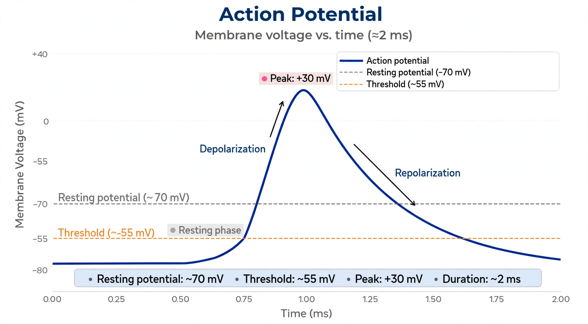

[Image placeholder: Phases of a neuronal action potential]An **action potential** (also known as a nerve impulse or spike) is a rapid sequence of changes in the voltage across a membrane, travelling along neurons and muscle fibres. In neurons, action potentials are the fundamental signals of the nervous system: the membrane potential jumps from a resting value near −70 mV to about +30 mV and back, in about a millisecond.
The mechanism was worked out by Alan Hodgkin and Andrew Huxley in the squid giant axon (1952): voltage-gated sodium channels open, Na⁺ rushes in and depolarises the membrane; voltage-gated potassium channels then open, K⁺ flows out and repolarises it, followed by a refractory period that enforces one-way propagation. Their model won the 1963 Nobel Prize.
A stimulus that depolarises the membrane past threshold (about −55 mV) triggers the all-or-none spike: rising phase (Na⁺ influx), peak, falling phase (K⁺ efflux), brief hyperpolarisation, then return to rest via the sodium–potassium pump. Larger axons and myelinated axons conduct faster, myelin enabling saltatory conduction between nodes of Ranvier.
Action potentials trigger neurotransmitter release at synapses and, in muscle cells, trigger contraction. In the heart, specialised pacemaker cells generate the rhythm recorded by an electrocardiogram. Many toxins and anaesthetics work by blocking voltage-gated sodium channels.